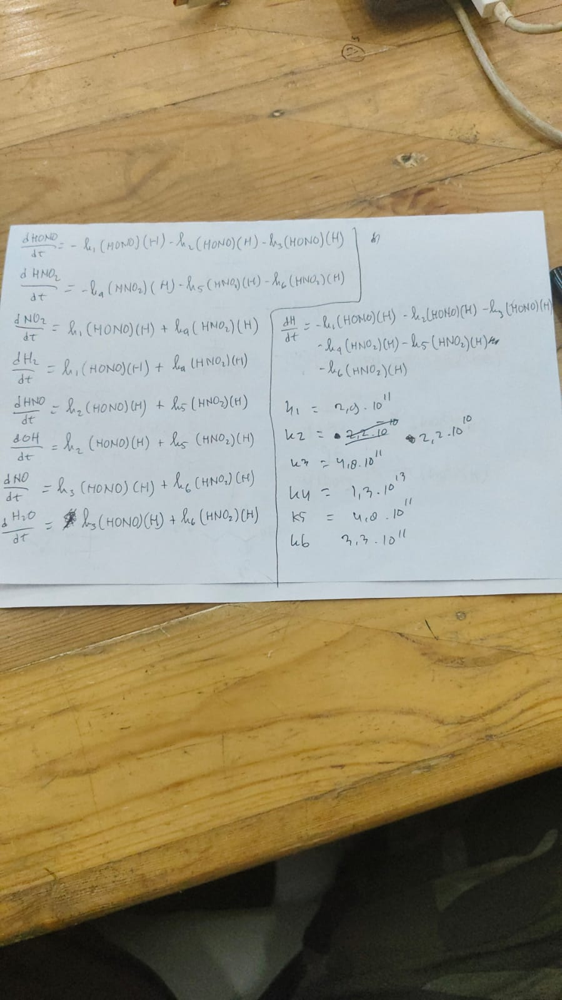
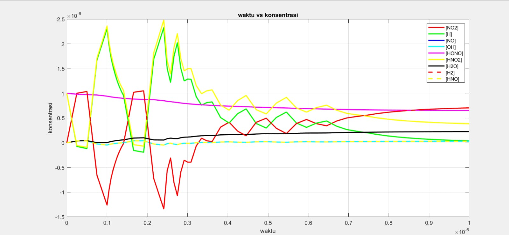
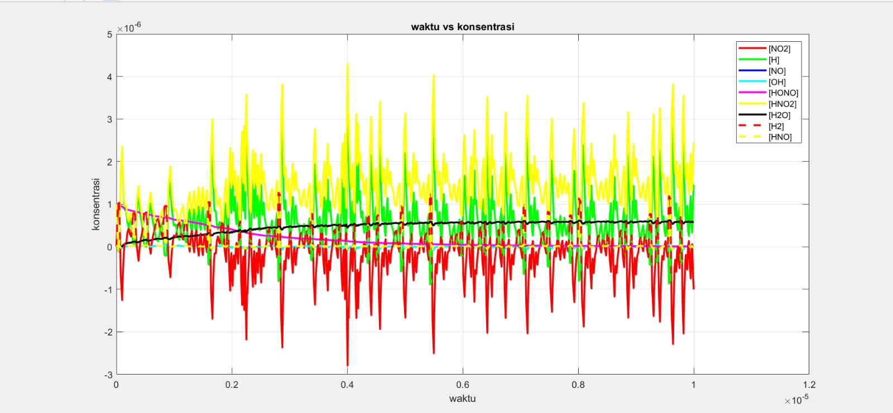
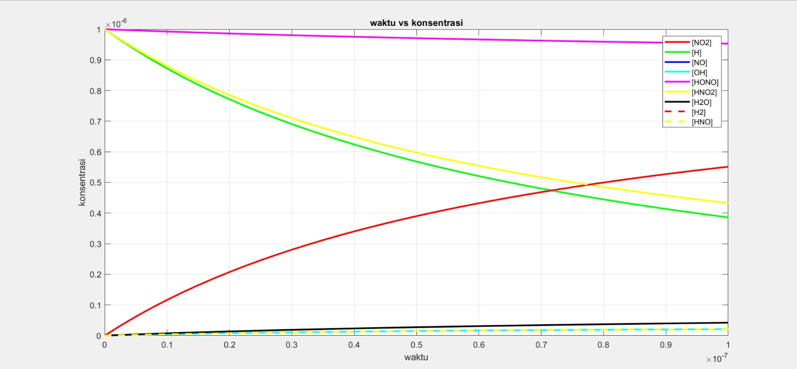
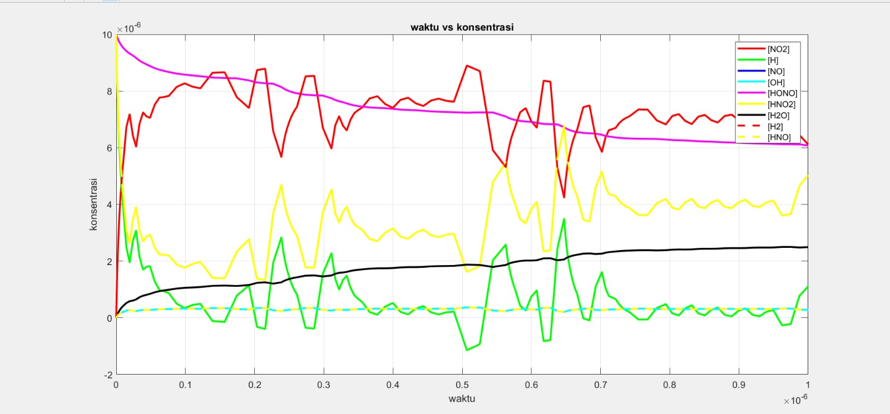
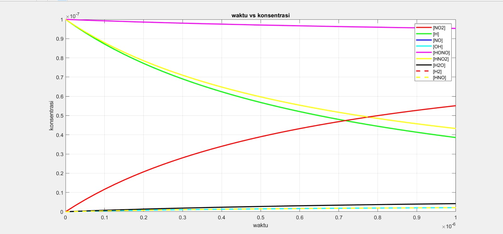
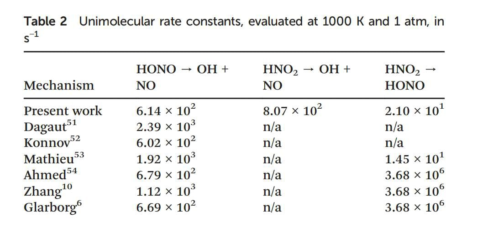

Computational Chemistry • Group 4 (Kelompok 4)
Simulated · Numerically Solved · Evaluated
Project Overview: Modeled a multi-species chemical reaction network of ammonia/C1 fuel combustion. Designed and implemented the numerical solver in MATLAB using the ode45 Runge-Kutta solver to integrate the system of 9 coupled ordinary differential equations (ODEs). Conducted validation trials across multiple time spans (tspan) and concentration ranges to find the optimal simulation window.

Fig. 1 — Group Derivation of Rate Changing Equations (d[Spesi]/dt)
| No | Reaction Equation | Rate Constant (k at 1000K) |
|---|---|---|
| 1 | HONO + H → NO2 + H2 | 2.9 × 1011 |
| 2 | HONO + H → HNO + OH | 2.2 × 1010 |
| 3 | HONO + H → NO + H2O | 4.8 × 1011 |
| 4 | HNO2 + H → NO2 + H2 | 1.3 × 1013 |
| 5 | HNO2 + H → HNO + OH | 4.8 × 1011 |
| 6 | HNO2 + H → NO + H2O | 3.3 × 1011 |
Applying the law of mass action to the reaction network yields a system of 9 coupled ordinary differential equations:
To achieve a representative kinetic trace, we performed sensitivity trials by varying the integration time span (tspan) and concentration bounds. This resolved issues related to numerical stiffness and oscillatory noise in the solver.

Fig. 2 — Optimum Simulation Profile (tspan = [0, 10-6] s, [C]0 = 10-6 M)
At the optimal boundary conditions, the Runge-Kutta integration resolves the complete decomposing trends of the reactants (HONO and HNO2) as they decay to zero within 0.6 μs. Concurrently, products such as NO2 and NO display clean asymptotic generation curves.
Smooth, physical kinetic pathways. Identical trends in wave curvature are correctly simulated for coupled products (HNO2 and H2), matching theoretical expectations.

Extending the time scale to 10-5 seconds introduces intense numerical instability. The ode45 solver experiences stiff step-size fluctuations, generating artificial high-frequency oscillations that distort physical concentration curves.

Shortening the simulation to 10-7 seconds yields under-resolved, linear concentration lines. The system has insufficient time to undergo reactions, showing incomplete kinetic progression.

Elevating the initial concentration to 10-5 M accelerates reactant consumption rate. This causes the differential equations to become extremely stiff, resulting in numerical noise and unstable curves in the output.

Dropping initial reactant concentrations to 10-7 M significantly slows down reaction kinetics. The collision rate is too low, yielding linear plots and very slow reactant conversion over the time span.

Fig. 3 — Unimolecular Rate Constants Reference (Zhang et al.)
Elementary rate constants (k) were validated against recent combustion literature:
Zhang, X., Yalamanchi, K. K., & Mani Sarathy, S. (2023). Combustion Chemistry of ammonia/C1 fuels: A Comprehensive Kinetic Modeling Study. Fuel, 341, 127676.
https://doi.org/10.1016/j.fuel.2023.127676
Using established rate coefficients at 1000 K and 1 atm ensured that the numerical simulation matches the physical behavior of nitrogen-oxygen gas-phase combustion intermediates.